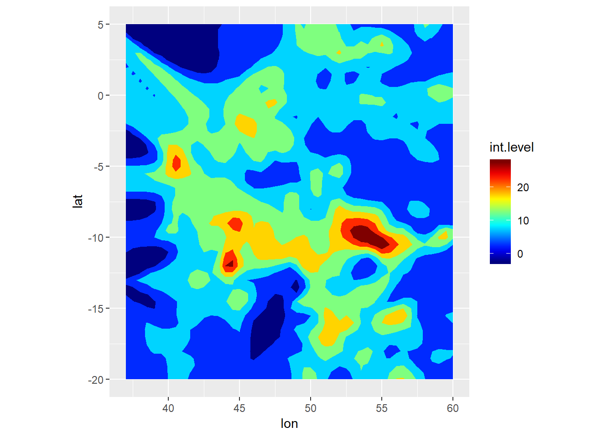
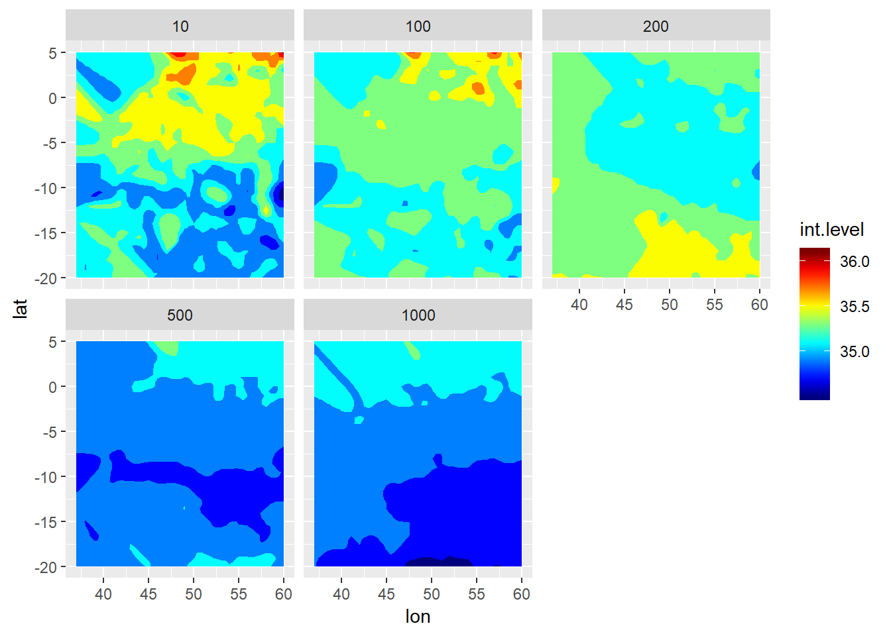
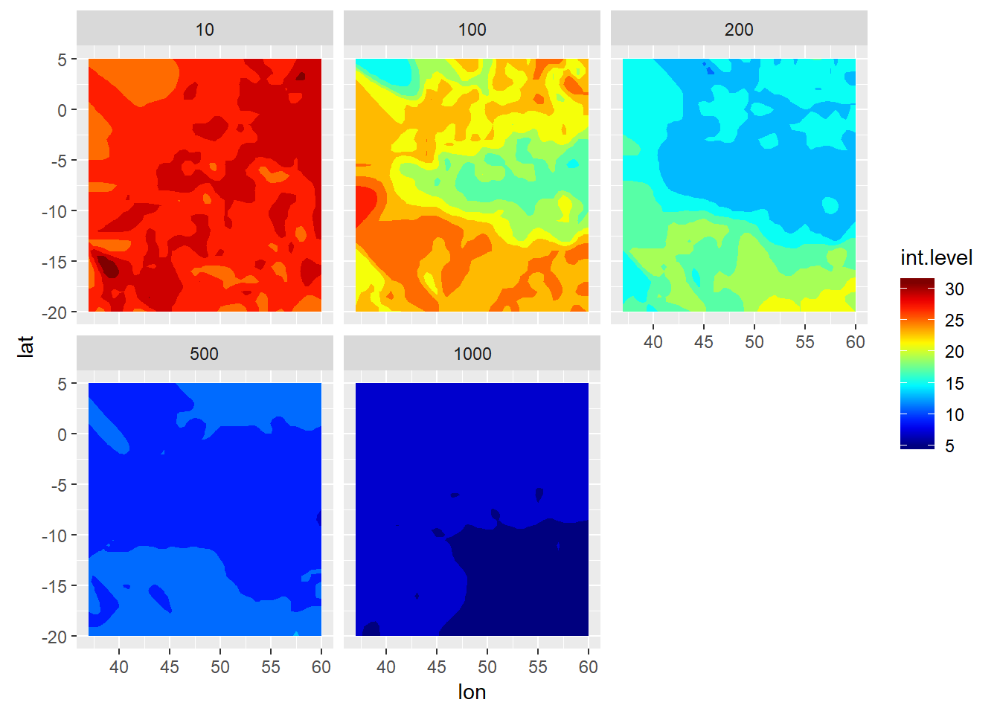

Chapter 18 Argo floats
18.1 Iso-surface
We have seen how to map the vertical sections of temperature, salinity and fluorescence with profiles data measured with CTD instrument. We can use Argo float data to achieve the same plots, however, we use these observation to make an iso-surface of temperature and salinity within the WIO region.
The Argo program started in the early 2000s with the objective of real–time monitoring the upper and intermediate ocean of the planet. The goal was to set a global array of 3000 simultaneous profiling floats, implying a mean distance between floats of about 3o. The aim was achieved in November 2007 and the array has been maintained since by deploying approximately 800 floats per year to replace the old ones. The global array provides over 100,000 CTD profiles and velocity measurements per year.
The record of Argo floats and its follow-ons, supplemented by data fro other missions, have provided the foundation for understanding the vertical structure of salinity and temperature of the upper oceans.
18.2 Regional and global distributions
Let us first consider the regional density of argo floats dataset. Later on we will look the iso-surface of temperature and salinity for different water layers and will explore the spatial patterns in the region.
After demeaning and normalizing in boxes of , we have a total of 771.485 surface realizations and 610.270 realizations at 1000 dbar.
18.3 Introduction
For years oceanographers have measured temperature and salinity from the surface to the ocean bottom (Foster 1983). However, our ability to obtain reliable temperature and salinity profiles at fairly resolution both in location and time has been improved through the use of profiling floats from the Argo program (Roemmich et al. 2009; Rosell-Fieschi 2014; Vilibić and Mihanović 2013). The Argo program started in the early 2000s with the prime objective of monitoring the upper layer of the world oceans (Rosell-Fieschi 2014). According to Liu et al. (2017), the progam has more than 4000 profiling floats distributed in all world ocean that measure the temperature and salinity of the upper 2000 m, at a fairly resolution of one float at three degrees of latitude and longitude (Web Page 2014). Over the past decade, the floats has greatly help us understand how temperature and salinity structures of the upper layer of the world oceans vary both in time and space (Lauro et al. 2014; Thadathil et al. 2011).
The way the floatas are distributed over world oceans ensure a new profile of temperatue and salinity as a function of depth once every ten days (Carton and L’Hegaret 2011). The goal of this post is to provide solid foundation in the most important tools of processing Argo flotas data with R. Wickham and Grolemund in the book R for data science clearly state five important steps—import, tidy, transform, visualize, model and communicate (2016). I will illustrate the necessary tools in each step based on the analytical model in the surface temperature from drifter post.
18.3.1 Import Data
I used delayed mode Argo float data for this post because its profiles have been checked for quality and validated with ship-based in-situ measurements. Some of the variables in the dataset include adjusted temperature, salinity and pressure. Once the dataset was downloaded as netcdf, it was imported into R’s workspace with read.oce(), a function from oce package (Kelley and Richards 2018). In addition to oce, other packages were loaded into the R to help processing and manipulation of data (Wickham 2017; Wickham et al. 2019) and for visualize the ouput and mapping (Kelley 2015; Wickham 2016; Xie 2018)
Because Argo floats have been deployed in the Indian ocean since 2000 and each Argo made several profiles, manual processing the data becomes a daunting task. I use the power of R to iterate the process. The advantge of iteration duplication by automating repeated operations, hence reduce the human error of introducing a bug in the process. Wickham and Grolemund (2016) stated that iteration help to do the same thing to multiple inputs: repeating the same operation on different datasets. Before we iterate the process, the netcidfiles were identified with a ir() function of base R.
18.3.2 Tidy the data
Once the list of file names was created, the for() function was used to loop over the netcdf argo files in a sequence order—from the first file to the last one in the working folder. Because the loop has to read the file first and then process the individual profiles in the that particular file, I nested the loop into the outer used latter i and the inner one used latter j. The outer loop (i) read the netcdfiles from working directory, remove bad data in the profiles and align them to the standard depth of five meter interval from the surface to 2000 meters. Then the inner (j) loop manipulate and transformed the profile of each file from oce format to data frame that can easily be handled for further analysis. The main components of loops used to chain the processes in this post are summarized below.
The output:
argo.ctd = NULLbefore the looping, I preallocate an empty file to store the iteration output.The sequence:
i in 1:length(argo.file)determine what to loop over. Each run of the for loop will assignito a differrent value from1:length(argo.file)The body:
argo = read.argo(argo.file[i])%>%handleFlags()%>%argoGrid(p = seq(0,2000,5)). This is the code that does the work. It is run repeately, each time with a different value fori.
The outer loop reads the netcdf file with read.argo(), then remove all bad profile data with handleFlags() and then align the profile to standard pressure of five meter interval from the surface to 2000 m deep with argoGrid(p = seq(0,2000,5)). The first iteration will run argo = read.argo(argo.file[1])%>%handleFlags()%>%argoGrid(p = seq(0,2000,5)), the second will run argo = read.argo(argo.file[2])%>%handleFlags()%>%argoGrid(p = seq(0,2000,5)) and so on until to the last file in the argo.file[i]
The inner loops transformed each profile in the argo file into data frame profile = argo.list[[j]]. It then added variables like station name argo = argo.file[i], station = argo.list[[j]][[“station”]]; time the of upload the data time = argo.list[[j]][[“startTime”]]%>%as.Date();longitude longitude longitude = argo.list[[j]][[“longitude”]]; latitude latitude latitude = argo.list[[j]][[“latitude”]]; and computed the density of each measurement in the profile density = argo.list[[j]]%>%swRho(eos = “gsw”). That is lot of talking and may sound difficult and hard to grasp, the code for the procedures above is in the chunk below. It can help you understand better if I might missed something or not explained well. I tried to comment in each step what each code does in the chunk.
18.3.3 Data Frames
You noticed that the process above involved converting netcdf files into tabular data—where a set of values is arranged into columns and rows. In data frame, the rows are observations and columns are variables. In base R, data frame are awesome because most functions for inference, modelling and graphing work well in data frame. Even the set of packages called tidyverse (Wickham 2017) works in data frame, but prioritized in a modern data frame called tibble. Data frame makes data manipulation and visualization much easier with popular package like ggplot2 (Wickham 2016) and dplyr (Wickham et al. 2019).
Data frame are unique compared to matrices in R because can hold variables of different flavors like character (Float ID), quantitative data (pressure, salinity, temperature) and qualitative data (monsoon season). Table 1 summarize the number of Argo floats in the area. There are 52 different argo floats that has measured temperature and salinity profiles. This is an interactive table, which allows you to explore in detail the table from your browser by clicking the up and down arrows just after the variable name. You can use this table to understand more about the argo floats in the area. For instance, you can explore which float has the longest measurement period or explore the relationship between the number of profiles and and period for each float.| Float ID | Begin Date | End Date | Period | Number of Profiles |
|---|---|---|---|---|
| 1900121 | 2002-11-11 | 2005-07-18 | 3 | 99 |
| 1900052 | 2002-12-07 | 2009-09-20 | 7 | 237 |
| 1900056 | 2002-12-10 | 2011-11-18 | 9 | 311 |
| 1900160 | 2003-06-26 | 2005-12-26 | 3 | 88 |
| 1900162 | 2003-06-26 | 2005-01-13 | 2 | 54 |
| 1900170 | 2003-06-27 | 2005-03-08 | 2 | 60 |
| 1900180 | 2003-06-27 | 2007-11-30 | 4 | 151 |
| 1900181 | 2003-06-27 | 2007-06-05 | 4 | 102 |
| 1900225 | 2003-08-15 | 2006-07-09 | 3 | 102 |
| 1900230 | 2003-08-15 | 2007-07-05 | 4 | 137 |
| 1900184 | 2003-09-23 | 2011-02-12 | 7 | 257 |
| 1900186 | 2003-09-24 | 2005-03-13 | 1 | 52 |
| 1900187 | 2003-09-25 | 2006-04-16 | 3 | 90 |
| 1900188 | 2003-09-25 | 2004-10-18 | 1 | 38 |
| 1900306 | 2004-01-07 | 2005-12-16 | 2 | 66 |
| 1900389 | 2004-09-15 | 2007-07-15 | 3 | 104 |
| 1900400 | 2004-09-15 | 2007-08-19 | 3 | 108 |
| 1900268 | 2004-11-26 | 2013-06-21 | 9 | 297 |
| 1900269 | 2004-11-26 | 2010-02-19 | 5 | 181 |
| 1900270 | 2004-11-26 | 2014-01-28 | 9 | 320 |
| 1900272 | 2004-11-27 | 2013-12-18 | 9 | 316 |
| 2900496 | 2005-04-05 | 2008-07-08 | 3 | 239 |
| 1900354 | 2005-04-24 | 2014-06-26 | 9 | 319 |
| 5900946 | 2005-05-26 | 2014-12-11 | 10 | 333 |
| 2900564 | 2005-09-16 | 2006-11-20 | 1 | 44 |
| 1900409 | 2006-10-16 | 2012-11-10 | 6 | 219 |
| 2901093 | 2007-12-05 | 2008-01-13 | 0 | 5 |
| 5901665 | 2008-08-04 | 2015-04-10 | 7 | 217 |
| 1901124 | 2008-10-27 | 2014-10-06 | 6 | 217 |
| 1900815 | 2008-11-21 | 2011-08-29 | 3 | 94 |
| 1900814 | 2008-11-22 | 2010-11-12 | 2 | 68 |
| 1900816 | 2008-11-22 | 2018-06-06 | 10 | 325 |
| 1900817 | 2008-11-23 | 2011-10-12 | 3 | 66 |
| 1901045 | 2009-06-24 | 2014-03-28 | 5 | 172 |
| 1901046 | 2009-06-24 | 2014-09-07 | 5 | 188 |
| 2901152 | 2009-07-08 | 2012-07-24 | 3 | 279 |
| 1901508 | 2010-10-19 | 2012-11-21 | 2 | 72 |
| 1901512 | 2010-10-20 | 2013-11-11 | 3 | 105 |
| 1901263 | 2011-03-06 | 2014-07-28 | 3 | 125 |
| 1901162 | 2011-05-02 | 2015-05-01 | 4 | 147 |
| 1901163 | 2011-05-03 | 2018-06-05 | 7 | 259 |
| 1901164 | 2011-05-06 | 2014-01-10 | 3 | 96 |
| 1901166 | 2011-05-08 | 2014-12-18 | 4 | 131 |
| 1901327 | 2011-10-19 | 2015-04-21 | 4 | 129 |
| 2901847 | 2011-10-20 | 2018-06-05 | 7 | 248 |
| 2901848 | 2011-10-20 | 2018-01-06 | 6 | 228 |
| 1901330 | 2011-11-08 | 2017-08-18 | 6 | 211 |
| 1901275 | 2011-11-21 | 2016-06-18 | 5 | 168 |
| 1901605 | 2012-03-12 | 2018-06-09 | 6 | 211 |
| 1901307 | 2013-06-26 | 2016-02-01 | 3 | 95 |
| 1901845 | 2014-03-11 | 2017-07-13 | 3 | 123 |
| 6902623 | 2015-04-12 | 2018-06-05 | 3 | 116 |
18.3.4 Transform
The data from Argo comes as individual netcdf files contain several profiles. Its is not the right format that I needed. I need to transform them into the format that make manipulation and analysis of profile measurement of temperature and salinity across the area much easier. I have already transformed the data in the for loop from the netcdf to data.frame. I will need to create some variable that are needed. the transformation of these dataset include creation of seasonal variable, creation of simple features, creation of grids.
18.3.4.1 Seasonal Variable
I then added a seasonal column in the existing data frame with a mutate() function. I divided the seaons into northeast (October to March) and southeast monsoon season (April to September).
Table interctive table 2 highlight the temperature and salinity and pressure profiles in the Indian Ocean measured with Argo floats number 6902623. This float made it first profile on April, 12, 2015 at longitude 50.17 oE ana latitude 0.52 oS and made 115 profile until latest prifile records of June 05, 2018. You may notice that there are eight variables—Id, date, longitude, latitude, pressure, temperature, salinity and season. Except the season variable that was tranformed from the date variable, the other seven variable you fetch them from Argo data.
You can interact with this table by searching a specific variable or sort any variable in either ascending or descending order. Xie (2018) developed DT package used to create this interactive table (the chunk below). In short, the chunk speaks like this. In the argo data frame argo.ctd pick observations from argo float with id 6902623; then remove all observations without values; then drop station and scan variables from the data frame; then print all observations from the data frame that met the conditions above as an interactive table. Note that the whole process has been chained with the pipe operator %>% widely referred as then or next
argo.ctd%>%
filter(wmoid %in% c(6902623))%>%
na.omit()%>%
select(-c(station, scan))%>% sample_n(12)%>%
knitr::kable(format = "html",
col.names = c("WMOID","Date","Longitude",
"Latitude","Pressure","Salinity","Temperature", "Season"),
caption = "Table 2: Argo float information in the tropical Indian Ocean Region") | WMOID | Date | Longitude | Latitude | Pressure | Salinity | Temperature | Season |
|---|---|---|---|---|---|---|---|
| 6902623 | 2016-02-16 | 47.24 | -3.288 | 1030 | 34.91 | 6.499 | NE |
| 6902623 | 2018-04-26 | 49.68 | -7.482 | 1020 | 34.85 | 6.194 | SE |
| 6902623 | 2016-12-12 | 51.85 | -5.321 | 800 | 34.93 | 7.646 | NE |
| 6902623 | 2017-02-10 | 52.48 | -5.120 | 35 | 35.51 | 28.642 | NE |
| 6902623 | 2017-06-10 | 54.08 | -3.676 | 1650 | 34.78 | 3.446 | SE |
| 6902623 | 2018-02-25 | 50.14 | -7.414 | 905 | 34.84 | 7.010 | NE |
| 6902623 | 2015-06-21 | 45.57 | -0.190 | 85 | 35.19 | 25.624 | SE |
| 6902623 | 2017-07-30 | 51.80 | -5.005 | 1595 | 34.79 | 3.676 | SE |
| 6902623 | 2016-08-24 | 49.64 | -5.270 | 160 | 35.17 | 13.764 | SE |
| 6902623 | 2016-04-26 | 48.70 | -4.095 | 470 | 34.86 | 9.475 | SE |
| 6902623 | 2017-08-29 | 52.16 | -4.841 | 1750 | 34.77 | 3.210 | SE |
| 6902623 | 2016-12-22 | 51.85 | -5.147 | 450 | 34.83 | 9.210 | NE |
Within the area, Argo floats have measured about 8419 profiles distributed between monsoon seasons. The southeast monsoon has a total of 4011 compared to 4057 profiles during the northeast monsoon season. The distribution of Argo floats within the area is fairly well (Figure 18.1) during the northeast (Figure 18.1a) and southeast monsoon season (Figure 18.1b).
Figure 18.1: The distribution Argo floats within the tropical Indian Ocean Region during a) northeast and b) southeast monsoon sesons
18.3.5 Create Simple Feature
st_as_sf() function was used to transform a data frame using longitude and latitude information that was used to create a simple featues and define the projection to World Geodetic System (WGS84) as the coordinate sysem.
18.3.6 Gridding
To have the homegenous distribution of Argo floats in the region, the area was divided into equal size grids of 900.
18.3.7 Populate Grids with Drifter Observations and Median SST
Once the grids were created, I computed the statistics in each grids. The first statistic metric computed was the number of profiles measurements in grids. The second metric was the calculation of median temperature and salinity in each grid. Figure ??a shows the total number of argo floast observations in a grid (Figure ??a) and temperature (Figure ??b) and salinity (Figure ??c) measured near the surface (~10 meter deep)


 `
References
Foster, Theodore D. 1983. “The Temperature and Salinity Fine Structure of the Ocean Under the Ross Ice Shelf.” Journal Article. Journal of Geophysical Research: Oceans 88 (C4): 2556–64. https://doi.org/doi:10.1029/JC088iC04p02556.
Roemmich, Dean, Gregory Johnson, Stephen Riser, Russ Davis, John Gilson, W. Breck Owens, Sylvia Garzoli, Claudia Schmid, and Mark Ignaszewski. 2009. “The Argo Program: Observing the Global Oceans with Profiling Floats.” Journal Article. Oceanography 22 (2): 34–43. https://doi.org/10.5670/oceanog.2009.36.
Rosell-Fieschi, Miquel. 2014. “Ocean Velocities as Inferred from Argo Floats: Methodology and Applications.” Thesis.
Vilibić, Ivica, and Hrvoje Mihanović. 2013. “Observing the Bottom Density Current over a Shelf Using an Argo Profiling Float.” Journal Article. Geophysical Research Letters 40 (5): 910–15. https://doi.org/10.1002/grl.50215.
Liu, Zenghong, Xiaofen Wu, Jianping Xu, Hong Li, Shaolei Lu, Chaohui Sun, and Minjie Cao. 2017. “China Argo Project: Progress in China Argo Ocean Observations and Data Applications.” Journal Article. Acta Oceanologica Sinica 36 (6): 1–11. https://doi.org/10.1007/s13131-017-1035-x.
Web Page. 2014.
Lauro, Federico M., Svend Jacob Senstius, Jay Cullen, Russell Neches, Rachelle M. Jensen, Mark V. Brown, Aaron E. Darling, et al. 2014. “The Common Oceanographer: Crowdsourcing the Collection of Oceanographic Data.” Journal Article. PLOS Biology 12 (9): e1001947. https://doi.org/10.1371/journal.pbio.1001947.
Thadathil, Pankajakshan, C. C. Bajish, Swadhin Behera, and V. V. Gopalakrishna. 2011. “Drift in Salinity Data from Argo Profiling Floats in the Sea of Japan.” Journal Article. Journal of Atmospheric and Oceanic Technology 29 (1): 129–38. https://doi.org/10.1175/JTECH-D-11-00018.1.
Carton, X, and P L’Hegaret. 2011. “Mesoscale Variability of Water Masses in the Arabian Sea as Revealed by Argo Floats.” Journal Article. Ocean Science Discussions 8 (3).
Wickham, Hadley, and Garrett Grolemund. 2016. R for Data Science: Import, Tidy, Transform, Visualize, and Model Data. " O’Reilly Media, Inc.".
Kelley, Dan, and Clark Richards. 2018. Oce: Analysis of Oceanographic Data. https://CRAN.R-project.org/package=oce.
Wickham, Hadley. 2017. Tidyverse: Easily Install and Load the ’Tidyverse’. https://CRAN.R-project.org/package=tidyverse.
Wickham, Hadley, Romain François, Lionel Henry, and Kirill Müller. 2019. Dplyr: A Grammar of Data Manipulation. https://CRAN.R-project.org/package=dplyr.
Kelley, Dan. 2015. Ocedata: Oceanographic Datasets for Oce. https://CRAN.R-project.org/package=ocedata.
Wickham, Hadley. 2016. Ggplot2: Elegant Graphics for Data Analysis. Springer-Verlag New York. https://ggplot2.tidyverse.org.
Xie, Yihui. 2018. DT: A Wrapper of the Javascript Library ’Datatables’. https://CRAN.R-project.org/package=DT.